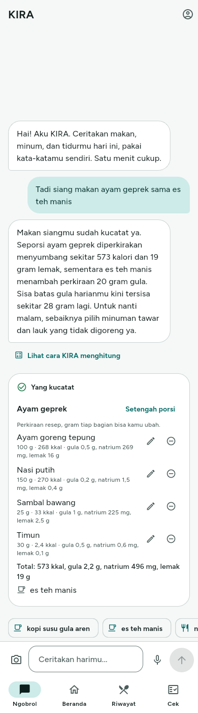
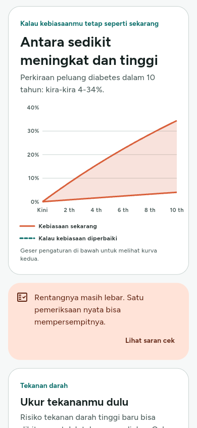

Kira-kira kesehatanmu 10 tahun lagi seperti apa? Tanya KIRA.
Teman ngobrol 1 menit sehari yang memproyeksikan risiko diabetes, menunjukkan kebiasaan paling berdampak, dan tahu kapan kamu harus cek.
orang usia 15 tahun ke atas punya gula darah di rentang diabetes (pemeriksaan)
yang pernah didiagnosis dokter. Artinya sekitar 4 dari 5 kasus belum terdiagnosis*
tingkat diagnosis hipertensi pada 2023 (24,1% pada 2018)
Sumber: Kemenkes, Survei Kesehatan Indonesia (SKI) 2023; Muharram dkk., BMJ Open 2025;15(12):e109588. *Hitungan tim: (11,7 − 2,2) / 11,7 ≈ 81%. Kemenkes (4 Agustus 2026): sekitar 1 juta kasus hipertensi baru terdeteksi pada 9,2 juta peserta Cek Kesehatan Gratis yang diperiksa ulang.
Tidak ada keluhan, tidak ada alasan. Sistem baru bertemu dia saat sudah terlambat. Celahnya ada di antara "merasa sehat" dan "diperiksa".
Mencatat kalori, tidak memproyeksikan risiko dan tidak tahu kapan kamu harus cek ke fasilitas kesehatan.
Tidak menyimpan profil dan state kesehatan terstruktur, tidak menghitung risiko dengan skor tervalidasi.
Memotret kondisi sekali setahun. Tidak ada pendamping di hari-hari di antaranya.
Prinsip: angka tidak pernah datang dari LLM. Risiko, gizi, dan sisa target dihitung fungsi deterministik yang bisa diaudit.
Dua proyeksi berdampingan: kebiasaan sekarang dan kebiasaan yang diperbaiki, diperbarui tiap ada catatan baru. Slider menggeser grafik langsung, dan KIRA menyorot satu kebiasaan paling berdampak.
Ketidakpastian ditampilkan sebagai rentang. Saat rentang terlalu lebar atau risiko naik, KIRA menyarankan cek yang paling berguna dan menunjukkan faskes terdekat.
Setelah dokter mendiagnosis, fokus pindah dari pencegahan ke pendampingan: target harian lebih ketat, ringkasan untuk dokter, dukungan keluarga atas izin pengguna.


Tangkapan layar prototype web dengan persona Raka (data dummy). Demo langsung memakai APK di HP Android.
Usia 20-40 tahun yang merasa sehat dan belum rutin cek; pengguna terdiagnosis yang butuh pendampingan harian; Puskesmas dan Posyandu yang menerima peserta yang memang perlu cek.
Belum ada uji pengguna atau pelanggan; semua metrik di atas adalah target yang akan diukur, bukan hasil.
| Tool | Dipakai untuk | Bagian |
|---|---|---|
| Claude Haiku 5.5 (Anthropic) | Ekstraksi makanan, minuman, tidur, aktivitas dari teks dan foto (struk, makanan, hasil cek) menjadi data terstruktur | Di produk |
| Claude Sonnet 5.5 (Anthropic) | Percakapan, memutuskan kapan memanggil tool, merangkai jawaban dari angka hasil tool | Di produk |
| Whisper large-v3-turbo (via Groq) | Mengubah voice note berbahasa campur menjadi teks | Di produk |
| Claude Code (Anthropic) | Asisten coding: menulis, menguji, dan men-debug kode aplikasi dan backend; menyusun dokumen | Pengembangan |
| Claude (riset & konsep) | Riset ide, penyusunan konsep dan struktur pitch | Pengembangan |
Bukan dikerjakan AI: skor risiko (FINDRISC, Framingham), perhitungan gizi dan sisa target, deteksi tanda bahaya. Semuanya fungsi deterministik dengan tes otomatis. Tidak ada OCR terpisah: foto dibaca model visi Claude, hasilnya dicek ulang aturan untuk nilai gula dan tensi.
Chat teks, suara, foto; proyeksi what-if; Saatnya cek; kalibrasi; mode pengelolaan; keluarga; ringkasan dokter; tautan WhatsApp (prototype)
WhatsApp Business Platform resmi, integrasi SATUSEHAT, kepatuhan UU PDP, uji pengguna
KIRA. Kira-kira kesehatanmu 10 tahun lagi seperti apa? Tanya KIRA.